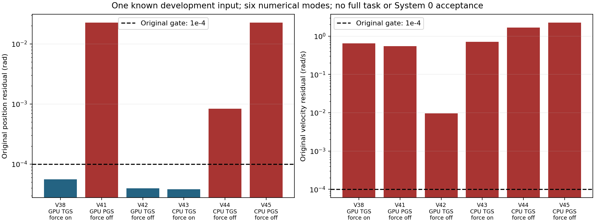
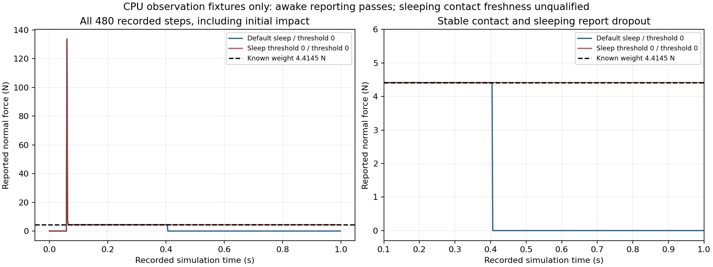

六组求解对照：联动与完整任务仍未达标
GPU/CPU × 支持的TGS/PGS及施力配置已完成六组原生诊断。所有组均未同时满足原位置、速度联动阈值0.0001。没有完整四臂任务通过，没有采用任何一组作为安全策略。
同一已知输入上的开发诊断；反馈导致实际命令可能不同。实验场景为2 FR3 + 2 UR5，标准硬件资产尚未验收。学习策略与System 0均关闭。六组对照不是六个独立随机样本，也不是System 0安全开关实验。
原标准下的全部结果

| 版本 | 后端/求解器/逐轮施力 | 控制/物理步 | 物理门槛 | 位置误差rad | 速度误差rad/s | 原联动模型 | 报告的共同接触秒 | 完整任务 |
|---|---|---|---|---|---|---|---|---|
| V38 | GPU / TGS / 开 | 640 / 5120 | 本窗口通过 | 5.62593341e-05 | 0.650237739 | 失败 | 0.01458275 | 失败 |
| V41 | GPU / PGS / 关 | 640 / 5120 | 本窗口通过 | 0.0226202086 | 0.547689557 | 失败 | 0.16457675 | 失败 |
| V42 | GPU / TGS / 关 | 602 / 4816 | 失败 | 3.95923853e-05 | 0.00966049172 | 失败 | 0 | 失败 |
| V43 | CPU / TGS / 开 | 640 / 5120 | 接触未验证 | 3.81544232e-05 | 0.712626815 | 失败 | 0 | 失败 |
| V44 | CPU / TGS / 关 | 640 / 5120 | 接触未验证 | 0.000834032893 | 1.67213619 | 失败 | 0 | 失败 |
| V45 | CPU / PGS / 关 | 640 / 5120 | 接触未验证 | 0.0225485712 | 2.25669789 | 失败 | 0 | 失败 |
V42发生手物接触力超标，保留完整停止窗口；首次超标事件4814记录34.6175146N，超过原30N门槛。这是首次超标值，不是全窗口最大值。V41报告共同接触约0.164577秒，仍短于0.25秒准入；CPU记录的共同接触全为零，但接触报告尚未验证，不能断言真实接触全无。
新发现：CPU接触报告的可信性尚未达标
V43–45的物体、支撑及全手臂报告全零，动态物体仍保持在支撑高度。原独立审计中的“物理门槛通过”只说明报告数值满足阈值，不能作为CPU接触安全验收。新的独立观测审计保留原报告，并将接触安全资格标为未知；原位置和速度联动失败仍然有效。
使用三个物理参数相同的重力支撑场景校验接触报告配置，结果与原始回执见独立接触校准。此次在运行中切换报告开关的校准失败，两阶段均为零报告；尚未证明开关是全部根因。解释订正保留原结果；该校准不计为四臂任务或正式安全样本。
V41：GPU / PGS / 逐轮施力关闭
V42：GPU / TGS / 逐轮施力关闭
V43：CPU / TGS / 逐轮施力开启
原联动逐步复核 · 原记录的物理与任务门槛 · 每个记录微步的选定原生字段 · 归档范围与源数据校验索引
CPU接触观测未验证：全零报告不能证明没有接触，表中的共同接触时长是报告值。
V44：CPU / TGS / 逐轮施力关闭
原联动逐步复核 · 原记录的物理与任务门槛 · 每个记录微步的选定原生字段 · 归档范围与源数据校验索引
CPU接触观测未验证：全零报告不能证明没有接触，表中的共同接触时长是报告值。
V45：CPU / PGS / 逐轮施力关闭
原联动逐步复核 · 原记录的物理与任务门槛 · 每个记录微步的选定原生字段 · 归档范围与源数据校验索引
CPU接触观测未验证：全零报告不能证明没有接触，表中的共同接触时长是报告值。
接触接口修复的独立校准
初始化前开启接触处理后，默认休眠物体在事件29–194有正接触报告，随后归零；连续报告验收失败。它的全部480步原生姿态和速度与之前控制逐位相同，说明该观察配置对照没有改变这组原生物理轨迹。
另设明确关闭休眠的校准物体，几何、质量与摩擦保持一致，连续报告检查通过：稳定段4.414681832N，理论重力4.4145N，相对误差约0.0041%，每步有正报告。该额外校准物体改变了休眠计算参数；实际四臂与物体的休眠参数没有改动。它不能证明休眠状态或全部82类机器人接触可靠。

初始化对照：连续报告失败 · 保持活跃的连续报告校准通过 · 完整480步校准原始数组
这里只完成了接触报告能力校准。V43–45的接触安全资格仍未知，四臂带载联动、完整任务、System 0同输入配对及正式随机留出仍未通过。
证据范围和随机性
本页公开V41–45每个记录微步的74关节原生位置/速度、实际目标、用户力矩、物体状态与尺寸、报告接触力、独立审计及全部四路视频。完整质量矩阵、刚体姿态、9021几何对和全部原始点接触块保存在NAS，源路径与SHA256在归档索引中；本页没有公开这些大数组。此前V35/36/38的完整公开原始归档保持原样。
128位置/128速度迭代、控制周期0.016666秒、每周期8微步、手臂FIFO6周期及全部原验收阈值保持不变。CPU结果不能作为GPU合格证据。PGS不支持开启该TGS逐轮施力选项，V40配置启动失败、0测试微步，不计为安全样本。
此前20,000个全50电机提案没有运行其原生随机轨迹，不能证明高维操作空间安全。机制和标准资产合格后，仍需至少两批新留出、每方法至少128条完整轨迹及有效运动、分层覆盖和统计界。
全部9项要求联合验收
| 要求 | 状态 | 已有证据 | 待达标 |
|---|---|---|---|
| 回退保持在原始非零速度和延迟下持续安全 | DEVELOPMENT_LONG128_PASS_FORMAL_PENDING | 128条×480周期开发集保持通过；仍非有效操作，正式独立960周期未验收 | 独立冻结多种子与运行时未来安全/制动认证 |
| 保留操作意图并有实际四臂运动 | FAIL | v4安全123/128且四臂指令运动66/128；v5安全116/128且运动128/128。分层路径90%门槛仍失败 | 漏检碰撞和FIFO到达/未来保持；选择性暂停、恢复及任务完成 |
| 强随机、大范围操作空间与定向危害覆盖 | PARTIAL_CONDITIONAL_DEVELOPMENT | 20,000个新开发提案覆盖26臂关节+24独立手指电机，映射48手指坐标；16,000均匀+4,000边界，原74限位/24关系软件校验通过。未运行其原生轨迹，不能替代旧固定手指开发集 | 实际原生手指/全50电机联合随机轨迹、几何拒绝率、对象布局和故障分层；至少两批独立正式960周期 |
| 科学规范的冻结协议、独立多种子、留出与不确定性报告 | NOT_ACCEPTED | 当前全部为已知开发样本；正式独立留出验收0 | 候选修复后冻结至少两套独立新种子；保留所有失败，报告最坏种子 |
| 物体位置、姿态、大小、速度、可达性进入明确规划与安全输入 | FAIL | GPU/CPU的六组原生求解配置均未通过原位置与速度联动标准；同一已知输入上的诊断，不是标准硬件资产验收。 | 完整受载模型、真实感知与陈旧状态故障、活动烘焙形状认证、标准资产推广 |
| 真实物理夹持、抬升、搬运、放置和释放 | FAIL | GPU各组均未完整夹持与抬升；CPU接触报告全零，接触观测未验证，不能将原记录的数值通过当作接触安全。 | 修复且校准逐步原生接触观测；真实四手持续夹持、100mm/2秒抬升及后续完整任务 |
| 真实四臂共同任务且有安全与不安全的同输入对照 | FAIL | 四手同梁真实摩擦记录完整；12秒CLOSE未满足抬升准备条件；System0与学习策略均关闭 | 完整协作成功及同输入System0开关配对 |
| 完整原生观测和独立危害判据，无漏测或单看画面 | PASS_RECORDED_BOUNDED_CASES_WITH_LIMITS | V41–45每个记录微步的原生关节位置/速度、目标、用户力矩及物体状态公开；全部质量矩阵、刚体姿态、几何与点接触原始块完整保存在NAS，当前页不公开这些大数组。CPU接触判据未校准。 | 活动烘焙形状、延迟到达/负载预测、正式广域随机与视觉输入完整验收 |
| 网页可审阅的安全对照、完整视角和证据归档 | PARTIAL_SAFE_TASK_COMPARISON_NOT_ACCEPTED | V41–45共20路四视角视频，MP4/WebM双格式；保留V42原力超标反例与CPU观测问题。 | 真实成功四臂完整任务、学习System0同输入开关配对与两批正式广域留出联合验收 |